砂面漆
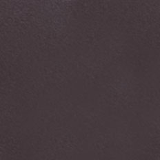
紅鐵砂色
黑砂色
灰砂色
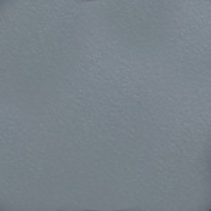
淺灰砂色
青銅砂色
深灰砂閃銀色
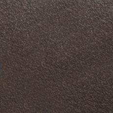
咖啡砂閃銀色
顆粒漆
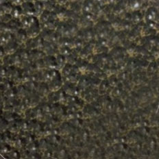
黃古銅色
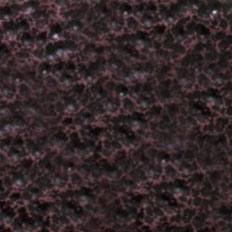
紅古銅色
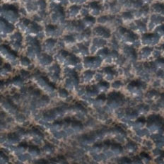
紅古銅無上光色
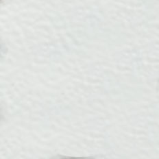
米白垂紋色
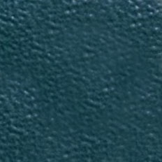
墨綠垂紋色
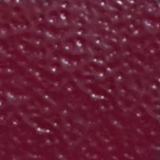
棗紅垂紋色
手工漆
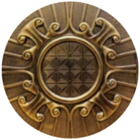
黃古銅色
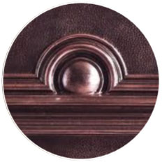
紅古銅色
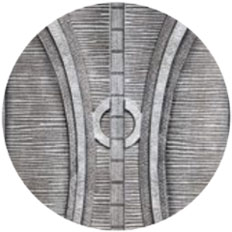
銀古銅色
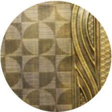
閃黃色
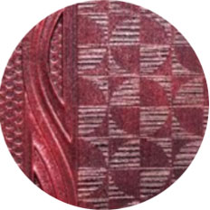
閃紅色
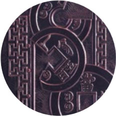
玫瑰紅色
特殊手工漆
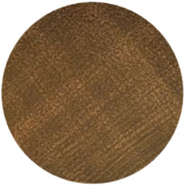
黃古銅色菱格紋
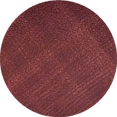
紅古銅色菱格紋
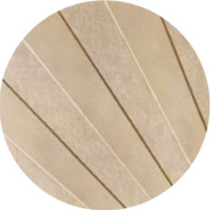
黃灰砂閃黃色
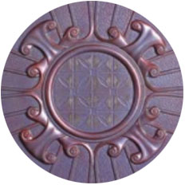
紅灰砂閃紅色
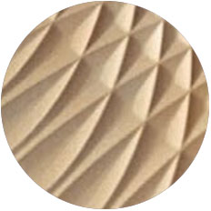
金砂色
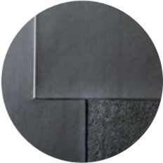
全消光黑色
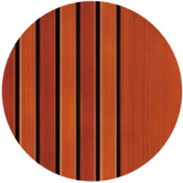
紅木色
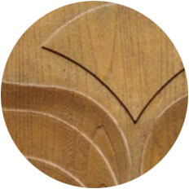
柚木色
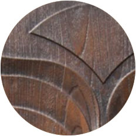
胡桃木色
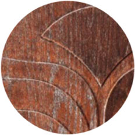
銅雕面飾漆